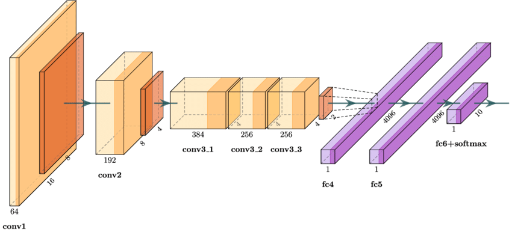
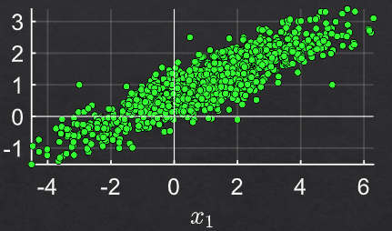

WorkShop - Object Detection with Yolov8#
env#
venv
micromamba create -n mambaYoloWrkShp -f EnvObjectDetection.yml
micromamba activate mambaYoloWrkShp
dataset#
known data sets:
https://cocodataset.org/ http://host.robots.ox.ac.uk/pascal/VOC/ https://captain-whu.github.io/DOTA/ - Large scale dataset for object detection in aerial images. https://homes.cs.washington.edu/~ranjay/visualgenome/ https://www.cvlibs.net/datasets/kitti/ - A data set optimized for autonomous driving
labels#
labels standards:
COCO Style: [x, y, width, height].
PASCAL VOC Style: [x_min, y_min, x_max, y_max].
YOLO Style: [x_center, y_center, width, height].
https://albumentations.ai/docs/getting_started/bounding_boxes_augmentation/
-
will create json label file for each input img in the same folder;
model#
Guidelines:
The 2 Stages models and ViT based models are the most accurate, yet usually slowest.
The YOLO based models are the fastest. Commonly used in edge devices or where real time performance are crucial.
The SSD based models are usually a balance and ranked in the middle with respect to speed and accuracy.
yolo main concept is based on a Grid + Anchors.
There are variants of YOLO which are anchor free for example: https://scribe.rip/fc0e25622e1c
resources#
https://arxiv.org/abs/2304.00501 - A Comprehensive Review of YOLO Architectures
arch V8#
ultralytics/ultralytics#189 Brief summary of YOLOv8

Train#
Choose the Model
Choose the Head - Modern YOLO models can do object detection, segmentation and key points detection.
Select the Hyper Parameters
train
score#

mAP alternative measures:
Performance on specific type of objects (small objects)
Analyze classification errors (Confusion Matrix).
Analyze regression errors: Size, Locations (Biases).
Analysis per class / weighted by classes
lab#
test Model: Ultralytics YOLOv8n- Set for Object Detection.
(n) is due to the simplicity of the task and the constrained time for training.
Image Input Size: 640x640.
Number of Parameters: 3.2e6.
input image is relatively large (1920x1080)
The model was trained on 640x640 images with [80x80, 40x40, 20x20] grids.
Naive training means the data will be resized with factor 3.
The ball size (Bounding Box) is about ~12x12.
After factorization it will be ~4x4 pixels which is too low for valid performance.
Solution: Tiled Detection (obss/sahi)
0001BoundingBoxFormat.ipynb#
convert between types
0002Dataset.py#
dw data set
0003PreProcessTiles.py#
prepare tiles
Train/Tiles/Video001Frame0015991Tile005.png
Video001Frame0015991Tile003.png Video001Frame0015991Tile004.png Video001Frame0015991Tile005.png Video001Frame0015991Tile008.png Video001Frame0015991Tile009.png Video001Frame0015991Tile010.png

0005TrainYolo.py#
from ultralytics import YOLO
modelCfgFile = 'yolov8n.yaml' #<! The name sets the scale of the model
modelWeightsFile = 'yolov8n.pt' #<! Download from GitHub
modelYolo = YOLO(modelCfgFile, task = 'detect')
modelYolo = modelYolo.load(modelWeightsFile)
modelResults = modelYolo.train(data = dataFile, epochs = numEpoch, batch = batchSize, imgsz = imgSize, workers = numWorkers, name = 'DetectionRun', amp = ampMode)